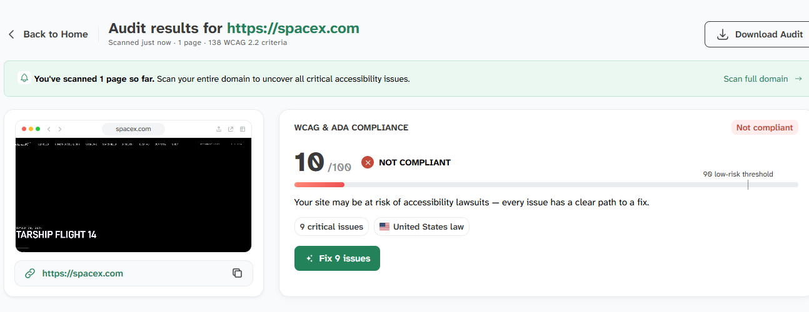
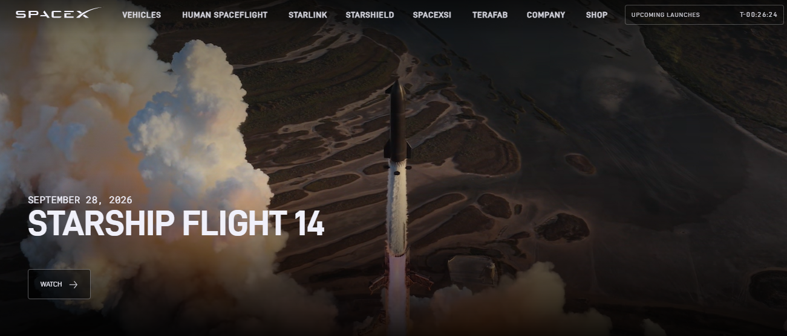

What is the URL of the website?
What is the Names of the Website?
SpaceX
Who is the target audience?
Primary target audience are space enthusiasts, potential customers, invenstors and general public
How is the webpage organized?
The webpage is organized into full-width sections with a clean, visually pleasing layout:
- Eye-catching header with SpaceX Logo, and naviagation menu
- Video link to watch most recent Starship 14 mission
- Explore SpaceX mission statement on the goals of the company
- Information on potential customers, techonology, and high speed Starlink internet
- The future of ai and SpaceX developing a scalable solution
- Footer that list, Careers , Updates, Privacy policy, Suppliers and investors
Content is grouped by product/program with strong visual hierarchy, large imagery.
Which CRAP design does the webpage use?
The page uses all principles (Contrast, Repetition, Alignment and Proximity), but especially the Contrast and Repetition
Example of high Contrast
High visual contrast between dark backgrounds and bright white text which includes awesome rocket imagery It helps create a visually pleasing impact to the reader, like myself that makes the message pop out and more interesting to look at
Example of Repetition
Consistant layout sections, button styles and spacing which helps the brand of SpaceX by making it "pop out"
What is the Audit score using the Accessibility Checker
Suprisingly using the checker: accessibilitychecker it stated that it failed the USA laws due to not being friendly to voice readers. It scored a 10/100 on the rating against USA laws for ADA.

Screenshot of SpaceX Webpage

What is the sites effectiveness?
The site is highly effective. Clear, know exactly what you are clicking in to (WATCH, LEARN MORE, RESERVE YOUR RIDE, JOIN A MISSION, ORDER NOW etc ) guide users towards goals such as viewing launches, learning about Starship, booking rideshare, or ordering Starlink. Includes up-to-date with mission timelines, and supports info for potential customers and space lovers.
What is the webpage's efficiency? Can task be performed quickly?
For me the efficeiency is superb. The navigation is clear, I can learn the layout quickly , visually appealing and clear on what I need to click, also a nice touch with the next missions clock countdown
How is the engagement? Is it pleasant to use?
I beleive it is, with the cinematic look of the rockets, dark and futuristic visuals creates an excitment to the companies mission for multiplanitary living.
What to improve?
Due to the low scoring on the Accessibility rating, I would look at the suggested improvement options to make it more friendly for all people who may need assistance in visual and audio audience. This would raise the webpages inclusivity and be accessible to all users.